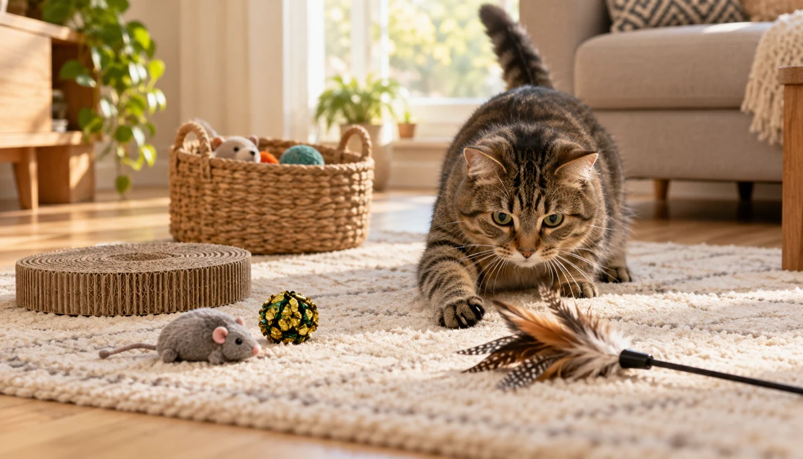

The Cat Toy Rotation Method: Less Clutter, More Play

Your cat probably does not need a bigger toy pile. They need a smaller selection that changes often enough to feel worth investigating. A toy rotation turns the forgotten mice under the sofa and the ignored balls in the basket into a simple weekly experiment: put out a varied set, watch what gets used, store the rest and swap with purpose.
Researched by the CanMyPet Editorial Team · Scheduled for October 23, 2026 · Based on the feline-enrichment sources listed below.
- Collect the toys your cat already owns.
- Remove anything damaged or impossible to clean.
- Sort the rest by play style, not by color or price.
- Leave out four to six different toys.
- Store the others out of sight.
- Swap part of the active set once a week and note what your cat actually uses.
Why rotation works better than a permanent toy floor
Cats are built to notice movement, contrast and changes in their territory. A toy that never moves from the same corner becomes part of the furniture. The Ohio State University Indoor Pet Initiative recommends offering different toy types and rotating them in different sequences so familiar toys can become interesting again. The AAFP/ISFM environmental guidelines likewise encourage varied opportunities for play and predatory behavior, including toys that mimic prey and can be caught.
The important idea is not that every cat needs a strict seven-day schedule. It is that novelty can come from presentation. A paper ball rolled down a hallway is a different experience from the same ball sitting beside the food bowl. A plush mouse placed half-inside a cardboard box invites a different action than a row of six mice lined up on the rug.
Build four toy groups by the job they do
Instead of making one box for “good toys” and another for “old toys,” sort by the kind of action each toy invites. This makes every weekly set more balanced.
Chase and pounce
Light balls, rolling toys and small objects designed for batting across the floor. These work best where the cat has a clear runway.
Stalk and capture
Wand toys, feather teasers and prey-like toys used during an interactive session. Let the cat catch the target regularly instead of making every chase unwinnable.
Grab and kick
Longer soft toys that a cat can hold with the front paws and kick with the back feet. Choose a size that suits the cat rather than a tiny decorative plush.
Explore and forage
Cardboard boxes, paper bags with handles removed, tunnels and simple puzzle toys that reward sniffing, searching and problem-solving.
You do not need an equal number in every group. The point is to notice whether your cat prefers “bird” movement in the air, “mouse” movement along the floor or quick bug-like motion. Ohio State's prey-preference exercise suggests presenting different movement types in short alternation and watching which one repeatedly earns attention.
The practical four-set system
Make four small sets from the collection. Each set should contain a mix of actions, not four versions of the same ball. Store three sets in closed, labeled containers and leave one active. A weekly rhythm is easy to remember, but it is only a starting point.
| Set | Suggested mix | Simple presentation | What to watch |
|---|---|---|---|
| A | Ball, soft mouse, kicker, wand | Roll the ball into a clear hallway | Which object gets the first approach? |
| B | Crinkle toy, tunnel, spring, wand | Place the spring just outside the tunnel | Does the cat prefer cover before chasing? |
| C | Paper ball, box, plush prey, puzzle | Hide one object loosely in the box | Does searching hold attention longer? |
| D | Textured ball, kicker, track toy, wand | Move the wand low along the floor | Does ground movement beat airborne movement? |
When rotation day arrives, do not replace everything automatically. Keep one toy that is still getting regular use and swap the ignored items. This “one stays, three change” approach makes the system responsive without turning the room upside down.
Use a two-minute play audit
Owners often remember the toy they hoped the cat would love, not the one the cat actually chose. A tiny observation log fixes that. Once or twice during the week, give each active toy a quick score:
- 0 Ignored, even when moved
- 1 Sniffed or tapped once
- 2 Short chase, bat or carry
- 3 Repeated play or returned to later
After three rotations, patterns usually become clearer. Perhaps the expensive electronic toy keeps scoring zero while every light object that skitters across the floor earns a three. That is useful information for how you play and what you stop buying.
Change location and movement before buying something new
A familiar toy can feel different when the context changes. Try one small change at a time:
- Move a ball from carpet to a smooth floor so it rolls differently.
- Place a toy beside, inside or behind an open cardboard box.
- Drag a wand low and irregularly instead of waving it over the cat's head.
- Pause the toy behind furniture, then let it reappear.
- Use a hallway for chase play and a rug for grabbing or kicking.
- Put the active toys in two rooms instead of one crowded “cat corner.”
Movement should resemble an interesting target, not a metronome. Short bursts, stops and changes of direction tend to create a more convincing game than constant fast motion. Let the cat watch, stalk and catch; staring is part of play, not proof that the session failed.
Keep favorites without breaking the system
If your cat sleeps beside one soft toy, carries it around the house or repeatedly seeks it out, leave it available. Ohio State explicitly notes that a strongly preferred toy may deserve to stay outside the rotation. Rotation is a tool for discovering preference, not a rule that removes a comfort object on schedule.
Interactive toys are different. Wand toys and anything with a long cord should return to storage after the shared play session. That keeps the special toy novel and prevents it from becoming another motionless object on the floor.
A low-clutter storage setup
You need one accessible active basket and one closed storage bin. Washable pouches or small labeled boxes inside the storage bin can hold the four sets. Keep catnip toys in a separate sealed bag so their scent does not spread through everything else.
On rotation day, inspect each item as it moves between storage and the room. Retire toys with loose parts, sharp edges, broken seams or exposed filling. Wipe or wash toys according to their materials and let them dry fully before storing. The rotation naturally creates a weekly maintenance moment without adding another household chore.
What if your cat ignores the new set?
First, make one toy move. Many toys are interesting only when a person turns them into prey. Next, test a different movement category: air, ground or tiny quick motion. Try at a time when your cat is already alert instead of waking them for the experiment.
If the whole set still gets no response, return to the last successful toy and copy its useful qualities. Was it light, fuzzy, noisy, bouncy, easy to carry or mostly fun because you controlled it? The answer tells you more than the brand or price.
Your first four weeks
- Week 1: establish a baseline. Put out a mixed set and record what receives real play.
- Week 2: test movement. Keep one favorite, add three alternatives and vary how they move.
- Week 3: test location. Present familiar categories in different rooms or near boxes and tunnels.
- Week 4: simplify. Remove consistent zeros, keep the proven favorites and rebuild the four sets around observed preferences.
At the end of the month, you should have fewer toys on the floor, a clearer picture of what your cat enjoys and a system that takes minutes rather than a shopping trip.
Frequently asked questions
How often should I rotate my cat's toys?
Once a week is a useful starting rhythm. Rotate sooner if the active set has gone completely untouched, or keep a successful set out longer if your cat is still using it. The response matters more than the calendar.
How many cat toys should be left out at once?
Start with four to six toys that offer different kinds of play, such as chasing, batting, kicking, hiding and scratching. The useful number is the smallest set your cat regularly uses.
Should I rotate my cat's favorite toy?
Not necessarily. A comfort toy or consistent favorite can remain available while the other toys rotate. The system should follow your cat's preferences rather than a rigid calendar.
Do I need to buy new toys for a rotation system?
No. Begin with the toys already in your home. Changing the combination, location and movement of familiar toys can create useful novelty without buying anything.
What should stay out all the time?
Keep essential resources and familiar resting, climbing and scratching areas available. Rotate portable play objects, not the parts of the home your cat relies on every day.
Sources: The Ohio State University Indoor Pet Initiative: Toys, Identifying Prey Preference, and the AAFP/ISFM Environmental Needs Guidelines. Sources checked October 16, 2026.